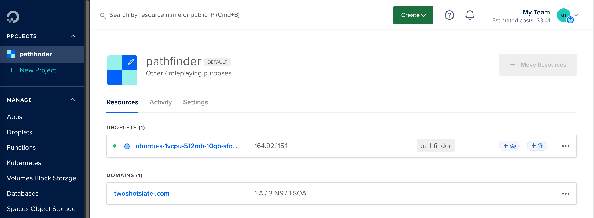
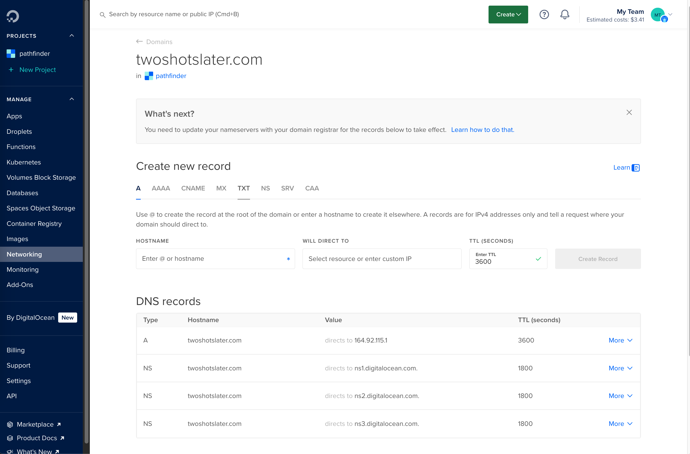

Creating my website from chicken scratch
So I've wanted to create a website for long, long time. I didn't want to create a website with Wix, Wordpress, or Squarespace, I wanted to build and host it myself. This short blog details my approach in using the following tools to create what you are seeing today! :
- languages: Kotlin
- web server: javalin
- cloud provider: digital ocean
- domain register: squarespace domains
- my domain was originaly under google domains, but on June 15 2023 "google entered into a definitive agreement with squarespace, where they intend to purchase all domain registrations and related customer accounts from google domains)" ... source
- TLS certificate provider : Let's Encrypt
- version controll : github
- asynchronous javascript + xml (AJAX): htmx
Poking the Cloud Bear
"The cloud" is a big term for a lot of different services. In my case I used small yet powerful corner known as a droplet. These are "machines anyone can set up in seconds", and I really found that to be true. You basically create an account, select the hardware you want to "rent" and then you're off to the races. Here's what mine looks like today (I'm was and am still going through DnD withdraw, so that's why it's named pathfinder 😅)

Pretty cool right! You can see the name, the ip (which is connected to this website!), how much it cost me, and the domain's I have registered for this droplet! (it costs around $16 a month for the hardware I'm renting, and I can cancel any time which is really nice)
This next part is really boring but important! It's all about connecting your domain name to the ip of your newly created droplet! This is the digital ocean help I found which added years to my lifespan. The two steps are
- Register square space domain with digital ocean servers

- Configure Digital Ocean Networking on Droplet to look something like this 
On top of domains, there is also getting a TSL certificate, which basically means your website is good and not evil! I did this through a cli called certbot which uses Let's Encrypt certificates on manually-administered websites to enable HTTPS. I tried a bunch of different options in the cli, and the following worked for me. (this might be a little verbose, but I will include it all to at least help me the next time I need to renew it 😅)
root@ubuntu-s-1vcpu-512mb-10gb-sfo3-01:~# certbot certonly
Saving debug log to /var/log/letsencrypt/letsencrypt.log
How would you like to authenticate with the ACME CA?
- - - - - - - - - - - - - - - - - - - - - - - - - - - - - - - - - - - - - - - -
1: Runs an HTTP server locally which serves the necessary validation files under
the /.well-known/acme-challenge/ request path. Suitable if there is no HTTP
server already running. HTTP challenge only (wildcards not supported).
(standalone)
2: Saves the necessary validation files to a .well-known/acme-challenge/
directory within the nominated webroot path. A seperate HTTP server must be
running and serving files from the webroot path. HTTP challenge only (wildcards
not supported). (webroot)
- - - - - - - - - - - - - - - - - - - - - - - - - - - - - - - - - - - - - - - -
Select the appropriate number [1-2] then [enter] (press 'c' to cancel): 1
Please enter the domain name(s) you would like on your certificate (comma and/or
space separated) (Enter 'c' to cancel): twoshotslater.com
Certificate not yet due for renewal
You have an existing certificate that has exactly the same domains or certificate name you requested and isn't close to expiry.
(ref: /etc/letsencrypt/renewal/twoshotslater.com.conf)
What would you like to do?
- - - - - - - - - - - - - - - - - - - - - - - - - - - - - - - - - - - - - - - -
1: Keep the existing certificate for now
2: Renew & replace the certificate (may be subject to CA rate limits)
- - - - - - - - - - - - - - - - - - - - - - - - - - - - - - - - - - - - - - - -
Select the appropriate number [1-2] then [enter] (press 'c' to cancel): 2
Renewing an existing certificate for twoshotslater.com
Successfully received certificate.
Certificate is saved at: /etc/letsencrypt/live/twoshotslater.com/fullchain.pem
Key is saved at: /etc/letsencrypt/live/twoshotslater.com/privkey.pem
This certificate expires on 2024-05-14.
These files will be updated when the certificate renews.
Certbot has set up a scheduled task to automatically renew this certificate in the background.
- - - - - - - - - - - - - - - - - - - - - - - - - - - - - - - - - - - - - - - -
If you like Certbot, please consider supporting our work by:
* Donating to ISRG / Let's Encrypt: https://letsencrypt.org/donate
* Donating to EFF: https://eff.org/donate-le
- - - - - - - - - - - - - - - - - - - - - - - - - - - - - - - - - - - - - - - -
There are moments in programming where everything clicks while nothing makes sense, you question reality one moment, and the next your problem is solved. This is network programming to me. I don't and will not pretend to understand it. I'm simply happy I got it working 😊. Moving on! ...
From here I firstly connected my github via an ssh key. This basically identifies the machine your logged in as friendly, so you can make pull, push, and all the other good git stuff. Interestingly github made away with personal passwords and you have to configure these keys in order to be productive ... Any who, now with my skeleton of a kotlin project on my droplet, I was able to actually test my changes.
Throwing my first Javalin
Disclaimer : I am learning Kotilin and loving it. I work full time in scala and with the community was more vibrant and the logo was cooler! In all seriousness I've been a big fan of Jetbrains IDE's since my college days, and I love writing object oriented with a functional lean (thank you rust) so Kotlin seemed like a no-brainer.
A list of things I love thus far :
- gradle: a refreshingly simple & powerful build tool I never knew I needed
- I love how easy it is to build, run, and add dependencies. I'm excited to learn more about tasks and other features moving forward!
- kotlin documentation: It's suprisingly easy and fast to look up random methods using the search bar
- Java Interoperability (Java Interop): Using java libraries is basically the same as using kotlin libraries from what I can tell! I have 0 fear of importing java libraries into my project!
- lambda functions: I love writing these so much! Function's with context are my jam!
Things that intimidate me :
- Co-routine syntax: seriously makes 0 sense to me how this is valid; like how does the 'launch' even come available to be used? It doesn't even look like all the kotlin I've been reading / writing
- The complexity / size of the JVM: I've never really digged in here, but it's more important now than ever before because I need it to stay running and preferably have a small runtime. My droplet does not have very much hardware backing it up, so I want to keep the JVM minimal.
- Versions, Versions, Versions: It is seriously confusing to understand what is compatible with what. I have a kotlin version, a java runtime version, a java compiler version, and my library versions on top of this. Basically it's a lot and I don't understand what depends on what quite yet.
Needless to say, it's been a lot of fun! In my efforts, I read this Hacker News Post about Javalin and decided to try it out ... (sidebar) something I have not mentioned yet is that I gave up on this project in the past with Svelte and with Rust. I could not figure out the dran SSL certificate (more on this later). Not to spoil the thrilling article, but Javalin gave me the confidence to take another stab at it (get it, javalin, taking a stab ... nvm) and get the job done!
Creating a web server and adding routes is easy PZ!! It looks like this:
import io.javalin.Javalin
fun main() {
val app = Javalin.create(/*config*/)
.get("/") { ctx -> ctx.result("Hello World") }
.start(7070)
}
I was able to quickly add a couple routes (index + blog) and now you can read what your seeing here! A little note on the blog you see infront you now ... I'm writing this in markdown, and I convert it to html whenever you click on the blog in the website because why not! I get to write in markdown and not have compiled versions of my articles lying around. Plus I get to practice my htmx!
Say what now! htmx! Funny enough I actually know the professor who wrote this beautiful library first hand. He taught a couple of my undergrad classes including compilers which was rad! It's gotten really popular as of late (30,000 stars!), so I knew I needed to give it a shot! I like how I can eliminate the need for a front end without giving up "reactivity" and inserting elements into the dom at runtime. In practice I get to replace elements without reloading the page! yay!
here's some code from the blog post main page. It "boosts" the 'a' tag to make a get request to the /blogger/creating-my-website-from-chicken-scratch url & then swap out the #main div with it's response! (if that did not make sense, don't worry I'm still learning to!) :
<div hx-boost="true" hx-target="#main" hx-swap="innerHTML" hx-replace-url="false">
<a href="/blogger/creating-my-website-from-chicken-scratch">Creating my website from chicken scratch</a>
</div>
With this done, I knew I could write my blog and publish it to the world!
I'm really proud of this journey and will continue to contribute here. Getting my mobile experience looking good and putting something on the home page (current empty) are some of the things I'm thinking about!
If you made it here, thank you! You rock!!
Tschuss!! - Kristoff